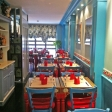
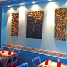
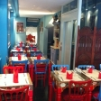
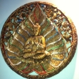

La capitale de pierre.
À deux pas du Palais Grand-Ducal.

Bleu océan, panneaux de Bouddha sculptés — le dépaysement dès la porte.
Une rareté au cœur de la ville.
La cuisine indonésienne est réellement rare à Luxembourg. Ici, le rendang de Sumatra, le gado-gado et le saté « recette de famille » côtoient les grands classiques thaï — un vrai voyage des îles, à quelques pas du Palais.
Un dépaysement tropical, en pleine ville.
Murs bleu océan, chaises rouges, panneaux de Bouddha balinais sculptés et un médaillon doré : la salle est le vrai atout de la maison.



Médaillon doréQuelques signatures.
Un aperçu — la carte complète compte bien davantage de plats.
Bali Beach (indonésien & thaï) et Maharaja (indien) partagent le même exploitant, la même adresse et le même téléphone au 8 rue de Louvigny. Un seul appel, deux cuisines.
À emporter & livraison
Déjà conquis ? Retrouvez vos plats chez vous. Le plus sûr reste l'appel direct au restaurant.